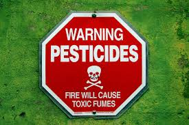

Pesticides
Bees have an open circulatory system which makes them extremely sensitive to toxic particles in the air causing disorientation, stunting growth ultimately leading to death.
Though small and seemingly insignificant, bees play a crucial roll in the reproductive cycles of many plants that provide us with a majority of the food that we eat today. Albert Einstein once said that “If the bee disappeared off the surface of the globe then man would only have four years of life left". Love fruits, veggetables, and nuts? Save a bee.
Bees have an open circulatory system which makes them extremely sensitive to toxic particles in the air causing disorientation, stunting growth ultimately leading to death.
While bee hives provide a home and safe place to raise their young, they are packed into such a small and confined space creating a breeding ground for disease and parasites.
Many companies will only rent bee hives for a season which require 100 of colonies to be transported far distances. Entire colonies are lost in the process.